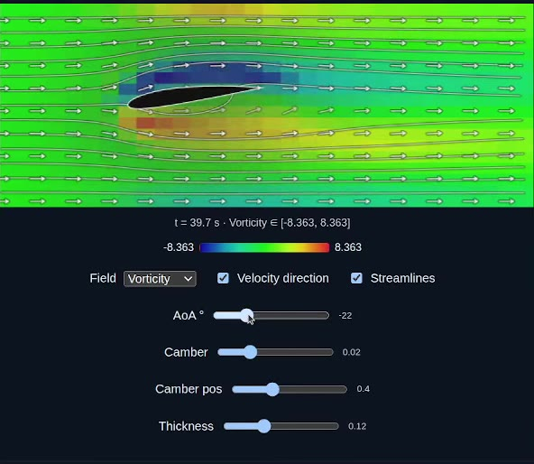

Cross-Domain Optimization with a Differentiable NACA Airfoil Model
Walk through the NACA 2412 Navier-Stokes demo, the compiler pipeline behind it, and why preserving array structure all the way to WebGPU matters.
Read post
Walk through the NACA 2412 Navier-Stokes demo, the compiler pipeline behind it, and why preserving array structure all the way to WebGPU matters.
Read post